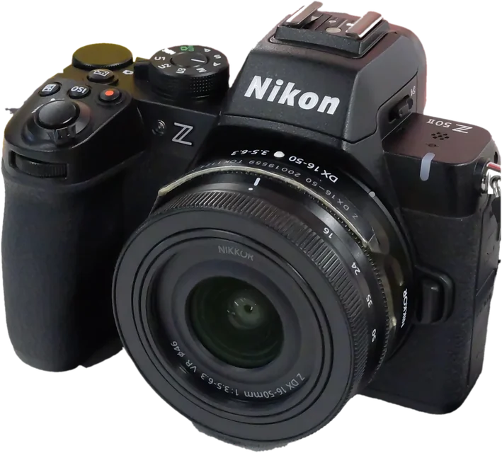
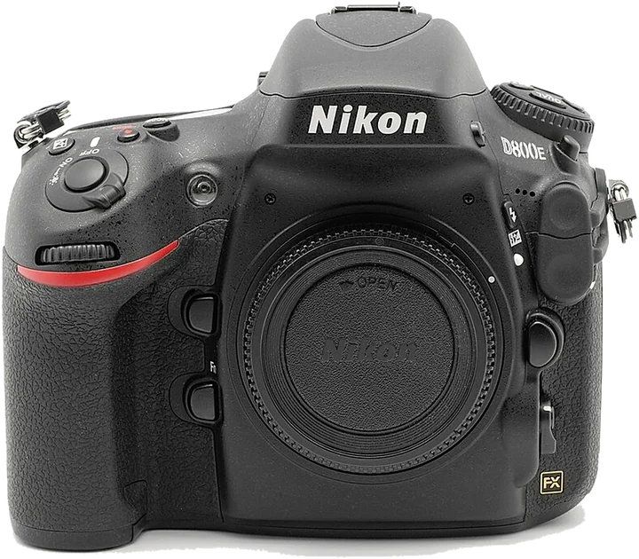

Les guides photo
Quel est ton appareil ?
Un guide gratuit et interactif pour chacun. Chaque bouton, chaque réglage, en jouant.

Hybride · format DXNikon Z50II20,9 Mpx · vidéo 4K · écran orientableOuvrir le guide →

Reflex · plein format FXNikon D80036,3 Mpx · 51 points AF · Full HDOuvrir le guide →
Pas encore de guide pour cet appareil.
Chaque guide est vérifié dans le manuel officiel de l'appareil.